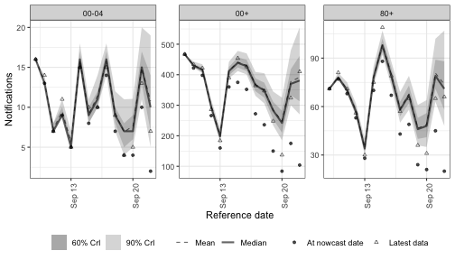
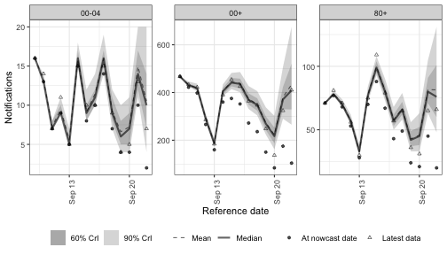
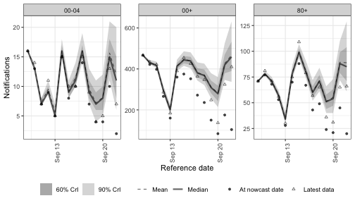
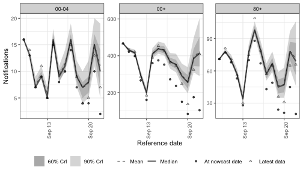
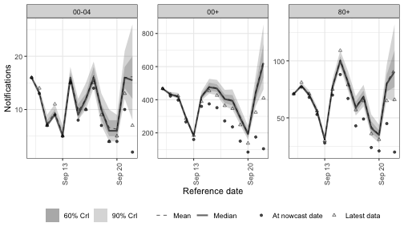
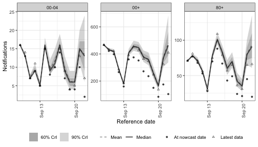

Latent process and periodic options for the growth-rate model
Epinowcast Team
Source:vignettes/latent-processes.Rmd
latent-processes.RmdThe expectation module’s r formula controls the latent log growth rate.
The options for giving it structure differ mainly in one way: how much the growth rate remembers its past.
This vignette walks through them from most to least persistent.
The first three are time-series terms built from the same ARIMA(p, d, q) machinery; rw(), ar(), and the general arima() share one backend.
-
Random walk via
rw(week, age_group). The growth rate drifts: each step builds on the last with no pull back towards a mean. This is ARIMA(0, 1, 0). -
Integrated AR via
arima(week, age_group, p = 1, d = 1). The same drift, but with autocorrelated increments, so the path is smoother than a plain random walk. -
Stationary AR via
ar(day, age_group, p = 1). The growth rate reverts to a fixed mean, with autocorrelated departures that decay rather than accumulate. This is ARIMA(1, 0, 0). -
Gaussian process via
gp(week, age_group). A smooth function of time with a length scale that controls how quickly the growth rate can change; a flexible non-parametric smoother.
The last two impose no time correlation at all.
-
Independent per-(week, group) effects via
(1 | week:.group). Each (week, group) cell is an independent draw from a shared Gaussian; the growth rate has no memory across weeks. -
Day-of-week effects via
(1 | day_of_week). A fixed weekly pattern that repeats rather than drifting, capturing periodic within-week variation.
The moving-average aliases ma() and arma() add an MA component to the same machinery.
MA structure is most useful as part of an ARMA model rather than on its own, so it is covered briefly at the end rather than as a standalone trend.
The fits use short NUTS runs via enw_sample() so the diagnostics shown below are meaningful.
The chains are deliberately short to keep the build time reasonable; a real analysis would run them for longer.
Setup
Code
library(epinowcast)
library(data.table)
#> Warning: package 'data.table' was built under R version 4.5.2
library(ggplot2) # nolint: unused_import_linter. Required by plot.epinowcast().
#> Warning: package 'ggplot2' was built under R version 4.5.2
library(knitr)Code
options(mc.cores = 2)We work with three German age strata reported nationally over five weeks of reference dates ending 28 days before the latest available reports.
The same pobs is used for every fit so any difference between the resulting nowcasts is down to the latent-process choice rather than the data.
Code
nat_germany_hosp <- germany_covid19_hosp[
location == "DE" & age_group %in% c("00+", "00-04", "80+")
]
retro <- nat_germany_hosp |>
enw_filter_report_dates(remove_days = 28) |>
enw_filter_reference_dates(include_days = 35)
pobs <- suppressWarnings(
enw_preprocess_data(retro, by = "age_group", max_delay = 14)
)max_delay = 14 is shorter than the 28–40 days the other German-data vignettes use.
It keeps the build fast but truncates the longer reporting tail, especially for the slower-reporting older age groups, so treat these nowcasts as an approximation chosen for illustration rather than a delay tuned to the data.
We also build the nowcast target: the count at each reference date once max_delay (14) days of reports have accumulated.
This is what the model is trying to predict, so we compare against it rather than the absolute latest snapshot, which would include later reports beyond the modelled delay window.
The reference dates the nowcast actually estimates are the most recent, still-incomplete ones; we trim the comparison data to those dates once the first model is fit so the plotted points line up with the nowcast.
Code
latest_obs <- enw_obs_at_delay(nat_germany_hosp, max_delay = 14)A common fit configuration is reused across the models: two short NUTS chains, enough to read off convergence diagnostics without a long build.
Code
fit <- enw_fit_opts(
sampler = enw_sample,
chains = 2, parallel_chains = 2,
iter_warmup = 500, iter_sampling = 500,
adapt_delta = 0.99, max_treedepth = 12,
refresh = 0, show_messages = FALSE, seed = 12345
)Older age groups tend to report more slowly, so a single shared delay distribution misfits the groups whose reporting differs from the average. We let the delay vary by age group with a shared random effect and reuse the same reference model for every fit, so the comparison stays focused on the growth-rate choice rather than the delay.
Code
reference_mod <- enw_reference(~ 1 + (1 | age_group), data = pobs)Random walk on weeks
rw(week) adds one Gaussian increment per week; the cumulative sum of those increments is added to r.
The growth rate drifts smoothly with no preferred direction and no mean to revert to, which makes the random walk the standard non-stationary smoother.
Code
nowcast_rw <- epinowcast(
pobs,
expectation = enw_expectation(r = ~ rw(week, age_group), data = pobs),
reference = reference_mod,
obs = enw_obs(family = "negbin", data = pobs),
fit = fit
)Code
Code
plot(nowcast_rw, latest_obs = latest_obs) +
facet_wrap(vars(age_group), scales = "free_y")Integrated AR
arima(time, by, p, d, q) adds a latent ARIMA(p, d, q) residual series to the linear predictor.
Differencing is applied via the cumulative-sum operator and the ARMA part via a parameter-dependent Toeplitz kernel built from the impulse response; both compose with a single matrix multiplication onto unit-normal shocks.
When by is supplied each group has its own column of unit-normal shocks; the AR/MA parameters and latent standard deviation are currently shared across groups.
arima(week, d = 1, p = 0, q = 0) recovers rw(week).
Adding p = 1 makes the random-walk increments autocorrelated, so the drift is smoother and more persistent than a plain random walk while remaining non-stationary.
Here we model the trend at weekly resolution, matching rw(week), so the only difference between the two is the autoregressive term.
Code
nowcast_arima <- epinowcast(
pobs,
expectation = enw_expectation(
r = ~ 1 + arima(week, age_group, p = 1, d = 1),
data = pobs
),
reference = reference_mod,
obs = enw_obs(family = "negbin", data = pobs),
fit = fit
)Code
plot(nowcast_arima, latest_obs = latest_obs) +
facet_wrap(vars(age_group), scales = "free_y")
The ARIMA-specific posterior summaries are the partial autocorrelation pacf (the stationary AR parameterisation) and the latent standard deviation sigma:
Code
| variable | mean | q5 | q95 |
|---|---|---|---|
| expr_arima_pacf[1] | -0.033 | -0.849 | 0.845 |
| expr_arima_sigma[1] | 0.031 | 0.011 | 0.057 |
Stationary AR
ar(time, by, p) is the alias for arima(time, by, p = p, d = 0, q = 0).
With no differencing the growth rate is stationary: it fluctuates around a fixed mean and departures decay rather than accumulate.
Contrast this with the integrated models above, where the growth rate is free to wander.
Stationary AR is the right choice when growth is stable on average and you want to model autocorrelated departures from that level rather than a drifting trend.
Code
nowcast_ar <- epinowcast(
pobs,
expectation = enw_expectation(
r = ~ 1 + ar(day, age_group, p = 1),
data = pobs
),
reference = reference_mod,
obs = enw_obs(family = "negbin", data = pobs),
fit = fit
)Code
plot(nowcast_ar, latest_obs = latest_obs) +
facet_wrap(vars(age_group), scales = "free_y")
Gaussian process on weeks
gp(time, by, d, kernel, basis_prop) adds an approximate Gaussian process to the growth rate.
Where the random walk and AR terms build memory from one step to the next, a Gaussian process places a smooth prior over the whole trajectory at once: nearby time points are correlated, with a length scale that the model learns from the data.
The result is a flexible smoother that can capture curvature a random walk would only reach through accumulated noise.
By default the process is stationary; gp(week, d = 1) integrates it once for a smoothly drifting, random-walk-like trend (mirroring arima()’s d), as detailed in the implementation notes.
The process is fitted using the Hilbert-space reduced-rank (spectral) approximation, so the cost is controlled by the number of basis functions rather than the number of time points.
basis_prop sets that number as a proportion of the series length (the default 0.2 follows EpiNow2); a larger value is more accurate but slower.
The default kernel = "matern32" is a Matern 3/2 kernel; "matern52", "ou" (Ornstein-Uhlenbeck), "se" (squared exponential), and "periodic" are also available.
The Stan implementation is adapted from EpiNow2 (MIT licensed).
The Gaussian process implementation notes cover the spectral approximation, the kernels, and the priors in detail.
Code
nowcast_gp <- epinowcast(
pobs,
expectation = enw_expectation(
r = ~ 1 + gp(week, age_group),
data = pobs
),
reference = reference_mod,
obs = enw_obs(family = "negbin", data = pobs),
fit = fit
)Code
plot(nowcast_gp, latest_obs = latest_obs) +
facet_wrap(vars(age_group), scales = "free_y")
The Gaussian-process-specific posterior summaries are the length scale rho (how quickly the growth rate can change) and the magnitude alpha (how far it can depart from the mean):
Code
| variable | mean | q5 | q95 |
|---|---|---|---|
| expr_gp_rho[1] | 3.331 | 1.385 | 6.397 |
| expr_gp_alpha[1] | 0.042 | 0.011 | 0.086 |
Independent per-(week, group) effects
(1 | week:.group) adds a separate random level for every (week, group) cell, drawn from a shared Gaussian.
The (1 | group) notation follows the same random-effect convention as lme4 and brms.
Unlike the time-series terms there is no correlation across weeks; each week is an independent draw.
This is the natural choice when weekly fluctuations look like noise rather than drift.
Code
nowcast_re <- epinowcast(
pobs,
expectation = enw_expectation(
r = ~ 1 + (1 | week:.group), data = pobs
),
reference = reference_mod,
obs = enw_obs(family = "negbin", data = pobs),
fit = fit
)Code
plot(nowcast_re, latest_obs = latest_obs) +
facet_wrap(vars(age_group), scales = "free_y")
Day-of-week effects
Periodic terms repeat on a known cycle rather than drifting freely. The most common case in surveillance data is day-of-week reporting: weekends look different from weekdays in roughly the same way every week.
(1 | day_of_week) gives every weekday its own offset drawn from a shared Gaussian.
The same Monday offset enters every Monday, the same Tuesday offset enters every Tuesday, and so on — exactly periodic across weeks.
The shared Gaussian pools information across the seven weekday levels, which is preferable to seven independent fixed effects whenever the dataset is short.
Swap (1 | day_of_week) for day_of_week if you would rather have unpooled fixed effects.
Code
nowcast_dow <- epinowcast(
pobs,
expectation = enw_expectation(
r = ~ 1 + (1 | day_of_week), data = pobs
),
reference = reference_mod,
obs = enw_obs(family = "negbin", data = pobs),
fit = fit
)Code
plot(nowcast_dow, latest_obs = latest_obs) +
facet_wrap(vars(age_group), scales = "free_y")
Combining latent and periodic terms
Latent and periodic terms compose in the same formula, which is the usual surveillance model: a slowly evolving trend plus a repeating weekly pattern. Here an integrated AR term carries the trend at weekly resolution while a day-of-week effect captures the within-week reporting cycle. Each term is identified by what it explains — the trend by the latent series, the weekday structure by the periodic effect — so they can be read off separately in the fit.
Code
nowcast_combined <- epinowcast(
pobs,
expectation = enw_expectation(
r = ~ 1 + (1 | day_of_week) + arima(week, age_group, p = 1, d = 1),
data = pobs
),
reference = reference_mod,
obs = enw_obs(family = "negbin", data = pobs),
fit = fit
)Code
plot(nowcast_combined, latest_obs = latest_obs) +
facet_wrap(vars(age_group), scales = "free_y")
Moving-average components
ma(time, by, q) and arma(time, by, p, q) expose the moving-average part of the same machinery: a shock at time t influences the series at lags 0, 1, ..., q and then drops out.
On its own a moving average sits on a flat mean, which is rarely a sensible model for a growth rate — there is no trend for the short-memory noise to sit on.
MA structure is more useful as a component of an ARMA or ARIMA model, where it captures short-range correlation on top of an autoregressive trend, for example arma(day, age_group, p = 1, q = 1) or arima(day, age_group, p = 1, d = 1, q = 1).
Note also that a moving average is not a periodic-by-weekday model: it gives correlated noise over a q + 1 step window, not a recurring weekly cycle.
For genuinely periodic within-week variation use a day-of-week term.
Higher-order moving averages are harder to fit: without an enforced invertibility constraint the MA(q) likelihood is multimodal, so chains can settle on different but observationally similar coefficient sets. The implementation notes cover the invertibility trade-off.
Fit diagnostics
Because these are NUTS fits we can read off standard convergence diagnostics for each model: the largest R-hat and smallest bulk effective sample size across all parameters, the number of divergent transitions, and the total sampler runtime.
Values close to 1 for R-hat, bulk effective sample sizes in the hundreds, and zero divergences indicate the short chains have converged; if not, lengthen the chains or raise adapt_delta.
The runtime column makes the accuracy-versus-cost trade-off explicit: the more flexible latent processes generally cost more to fit, so it is worth checking that the extra structure earns its keep.
Code
fits <- list(
"rw(week, age_group)" = nowcast_rw,
"arima(week, age_group, 1, 1, 0)" = nowcast_arima,
"ar(day, age_group, 1)" = nowcast_ar,
"gp(week, age_group)" = nowcast_gp,
"(1 | week:.group)" = nowcast_re,
"(1 | day_of_week)" = nowcast_dow,
"(1 | day_of_week) + arima(week, ...)" = nowcast_combined
)
diagnostics <- rbindlist(lapply(names(fits), function(model) {
fit_summary <- summary(fits[[model]], type = "fit")
divergences <- fits[[model]]$fit[[1]]$diagnostic_summary()$num_divergent
data.table(
model = model,
max_rhat = round(max(fit_summary$rhat, na.rm = TRUE), 3),
min_ess_bulk = round(min(fit_summary$ess_bulk, na.rm = TRUE)),
divergences = sum(divergences),
runtime_s = round(fits[[model]]$fit[[1]]$time()$total)
)
}))
kable(diagnostics)| model | max_rhat | min_ess_bulk | divergences | runtime_s |
|---|---|---|---|---|
| rw(week, age_group) | 1.012 | 244 | 0 | 73 |
| arima(week, age_group, 1, 1, 0) | 1.013 | 255 | 0 | 62 |
| ar(day, age_group, 1) | 1.012 | 174 | 0 | 86 |
| gp(week, age_group) | 1.029 | 152 | 0 | 59 |
| (1 | week:.group) | 1.030 | 219 | 0 | 74 |
| (1 | day_of_week) | 1.010 | 191 | 0 | 67 |
| (1 | day_of_week) + arima(week, …) | 1.016 | 165 | 0 | 94 |
When to reach for which
The five models trace a spectrum of how much the growth rate remembers its past, from full drift to none.
| Option | Memory of the growth rate | Formula example | Useful when |
|---|---|---|---|
| Random walk | Full drift, no mean | rw(week, by) |
The growth rate evolves smoothly with no preferred direction; the standard non-stationary smoother. |
| Integrated AR | Drift, smoother | arima(week, by, p = 1, d = 1) |
You want a drifting trend but with autocorrelated, more persistent increments than a plain random walk. |
| Stationary AR | Reverts to a mean | ar(day, by, p = 1) |
Growth is stable on average and you want to model autocorrelated departures from that level rather than drift. |
| Gaussian process | Smooth, learned length scale | gp(week, by) |
You want a flexible non-parametric smoother whose smoothness is learned from the data rather than fixed by the differencing order. |
| Independent week effects | None | (1 \| week:.group) |
Weekly fluctuations look like noise around a stable mean; no time correlation is imposed. |
| Day-of-week effects | Fixed weekly cycle | (1 \| day_of_week) |
Within-week variation is structurally periodic and you want pooled rather than fixed weekday effects. |
These options compose within the same formula.
A typical surveillance pattern mixes one latent option for the trend with a periodic term for calendar effects, for example ~ 1 + (1 | day_of_week) + arima(week, p = 1, d = 1).
The by argument on arima(), the aliases ar() / ma() / arma(), and rw() lets each group draw its own innovation series; the AR/MA parameters and latent standard deviation are currently shared across groups (per-group parameters are a planned extension).
These terms are not specific to the growth rate.
The same rw(), ar(), arima(), gp(), and random-effect terms can be placed on any module’s formula, each routed through the shared regression layer: the growth rate (expr) and latent-to-obs proportion (expl) in [enw_expectation()], the parametric (refp) and non-parametric (refnp) reference delay in [enw_reference()], the report-date hazards (rep) in [enw_report()], and the missing-reference proportion (miss) in [enw_missing()].
An arima() or gp() term on the reference delay mean, for instance, models a reporting delay that drifts over time.
See the ARIMA and Gaussian process implementation notes for the per-module details.